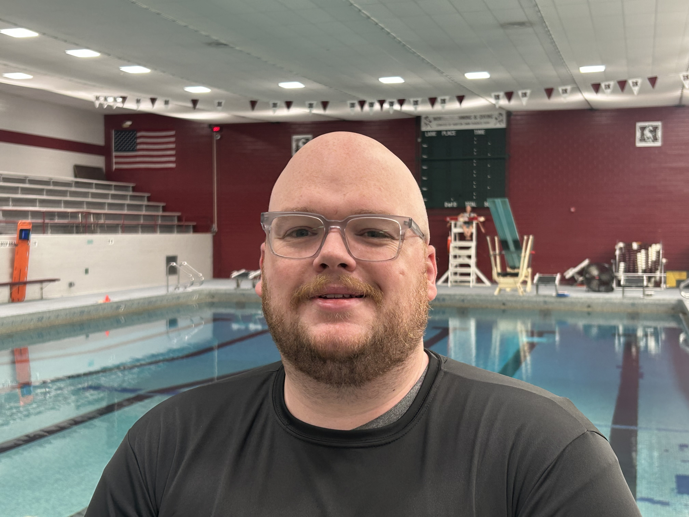
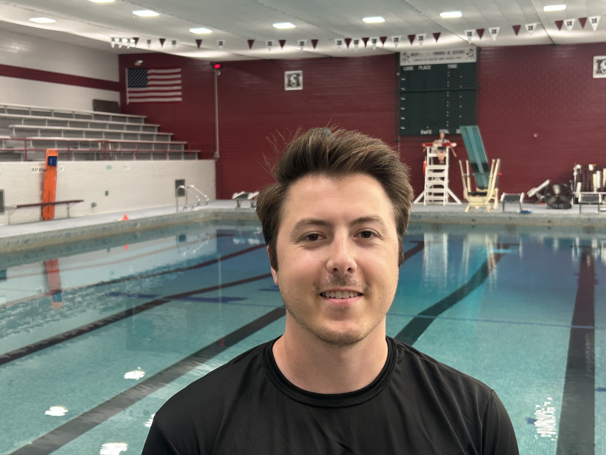

Meet Our Coaches
Our experienced coaching staff is dedicated to developing every athlete.

Mark Hallman
Head Coach
Mark is the current head coach of Oak Park River Forest water polo. He started this team in 2026 in the hopes of providing a sustainable way to introduce kids in the West Cook area to water polo, and to help foster the strength of the sport in the state of Illinois. Was assistant coach at OPRF from 2022-2025. During that time he also worked as a 16U water polo coach at Lyons Aquatics from 2022-2024.
Coach Mark believes strongly in the value of athletics, and particularly in teaching kids self-sufficiency and curiosity. He always encourages his players to push themselves physically AND mentally when confronted with new challenges in the hopes that they can carry that resilience and problem-solving ability into their lives far beyond water polo.
Played high school water polo at Oak Park River Forest where he was 1st team all state in 2014. Went on to play at Pomona College where he was a part of two SCIAC championship teams and participated in two Division I NCAA tournaments. While playing at Pomona, the team finished ranked top 20 nationally in 2016 and 2017.

Ben Gronwold
Assistant High School Coach
Ben joins West Cook Water Polo with more than a decade of coaching and water polo experience. A Class of 2012 graduate of Oak Park River Forest, Ben swam and played water polo all 4 years with the Huskies. After graduation, he attended Illinois State University and continued to play club water as both a player and a coach, picking up Women’s Coach of the Year for the CWPA Great Lakes Division in 2016. While attending ISU, Ben spent the summers coaching at Windy City Water Polo working with the 14 and under teams. Following his time as a Redbird, Ben joined Kyle Perry at Fenwick High School as Boys Assistant until the 2023 and continued to coach the 18U boys for Windy City Water Polo. His latest coaching experience brought him to York High School, were as an assistant under Brain Drumm York took third place in the state of Illinois during 2024/2025 season. Ben is excited to come back to his roots and build something special in the pool for the surrounding OPRF communities.

Lawrence Cozzi
Assistant Coach
Lawrence brings 18 years of polo experience to West Cook Water Polo. After playing on a youth club team growing up, he played on OPRF’s varsity team for four years before heading off to Purdue University, where he was President of the Men's team and coached the Womens’ team. He moved back to the area last summer, sharing this experience and enthusiasm as a coach with OPRF’s boys’ team as a volunteer coach since. Lawrence is excited to be back in the west suburban water polo community and to see how West Cook Water Polo grows.